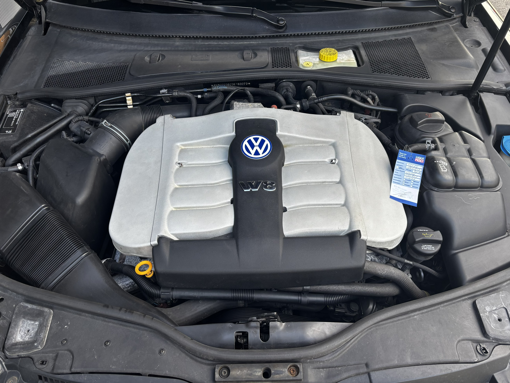
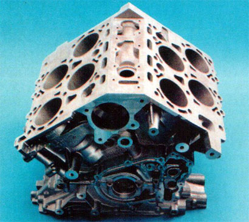

Der Volkswagen W8 ist ein außergewöhnlicher Motor. Durch seine ungewöhnliche Bauweise verbindet er acht Zylinder mit einem sehr kompakten Motorblock. Der W8 besteht aus zwei eng zusammengebauten VR4-Motoren. Durch diese Konstruktion entstand ein besonders kurzer Achtzylinder, der erheblich kompakter als ein herkömmlicher V8 ist. Dieses innovative Konzept bildete die Grundlage für spätere Volkswagen-W-Motoren, darunter der W12 im Phaeton und Bentley sowie der legendäre W16 des Bugatti Veyron.

Stückzahlen
Weltweit wurden nur etwa 11.000 Passat W8s gebaut.
Die meisten Exemplare waren mit einem 5-Gang-Automatikgetriebe ausgestattet.
Er ist einer von noch ca. 450 Stück die in Deutschland insgesamt noch vorhanden sind.
Der W8 Motor

Der Passat W8
Der VW Passat W8 wurde von 2001 bis 2004 als Limousine und Kombi gebaut.Er war das Spitzenmodell der Passat-Baureihe B5.5. und vereinte luxuriösen Reisekomfort mit einem der ungewöhnlichsten Motorenkonzepte der Automobilgeschichte.
Der Passat W8 wurde von Volkswagen gebaut, um einen außergewöhnlichen Achtzylinder in einem vergleichsweise unauffälligen Fahrzeug anzubieten.
Heute ist der W8 eine seltene Besonderheit innerhalb der Passat-Baureihe und besonders Fahrzeuge mit 6-Gang-Handschaltung sind ausgesprochen selten.
Der Neupreis für den Passat W8 Variant mit 5-Gang Automatik, in der Grundausstattung, lag bei 85.371,97DM oder 43.650Euro.